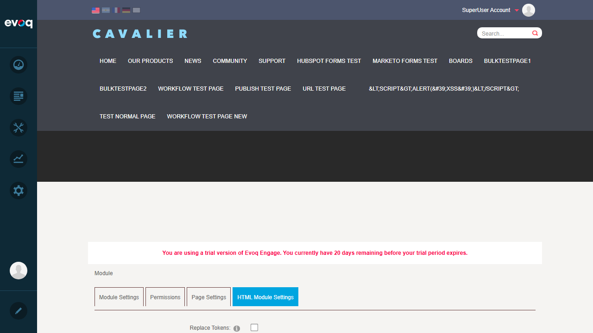
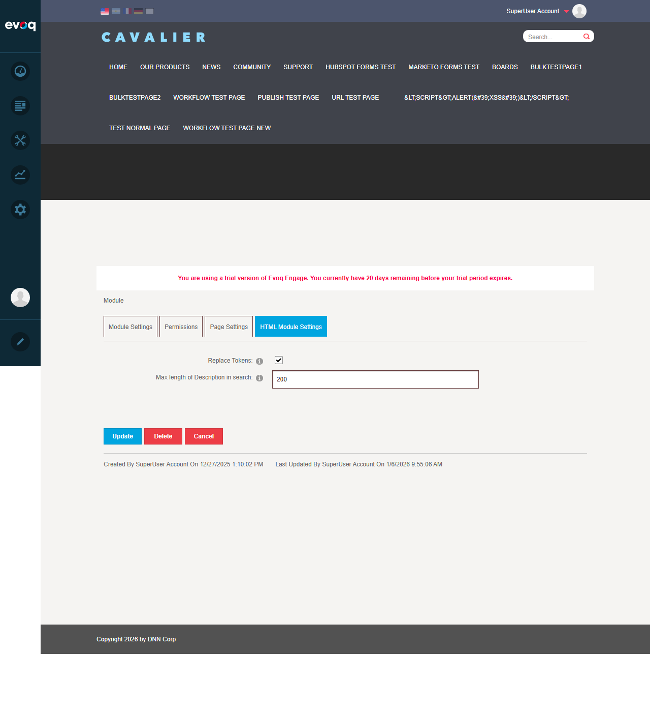
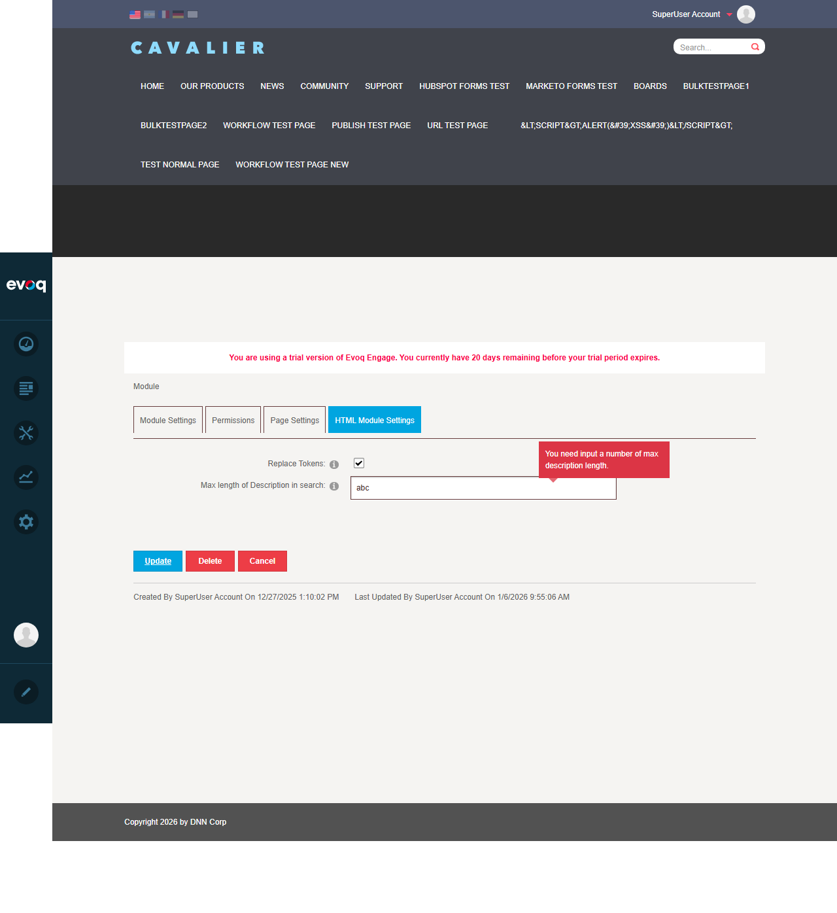

Configure module-specific settings including workflow, tokens, and display options
UI Location:
Module Actions > Settings > HTML Module Settings tab
Test Date:
January 6, 2026
Priority:
High (THOROUGH testing)
Test Results Summary
Test Scenario
Status
Enable/disable token replacement
PASS
Set search description length
PASS
Save settings successfully
PASS
Validate setting values (non-numeric input)
PASS
Detailed Test Cases
Test 1: Enable/Disable Token Replacement
PASS
Objective: Verify that the Replace Tokens checkbox can be enabled and the setting persists after save.
Steps Taken:
Navigated to Module Settings for an HTML module (ModuleId 469)
Clicked on "HTML Module Settings" tab
Located the "Replace Tokens" checkbox (initially unchecked)
Checked the Replace Tokens checkbox
Clicked Update to save settings
Re-navigated to settings to verify persistence
Result: The checkbox was successfully enabled and the setting persisted after saving. When Replace Tokens is enabled, the system also disables module caching (as per code behavior).

Step 1: HTML Module Settings tab showing the settings fieldsStep 2: Replace Tokens checkbox enabled
Test 2: Set Search Description Length
PASS
Objective: Verify that the "Max length of Description in search" field can be modified and saves correctly.
Steps Taken:
Navigated to HTML Module Settings tab
Located the "Max length of Description in search" textbox (default value: 100)
Changed the value from 100 to 200
Clicked Update to save
Re-opened settings to verify the new value persisted
Result: The search description length value was successfully changed from 100 to 200 and persisted after saving.
Search Description Length changed to 200 with Replace Tokens enabled

Settings verified after save - values persisted correctly
Test 3: Save Settings Successfully
PASS
Objective: Verify that clicking Update successfully saves all module settings and redirects appropriately.
Steps Taken:
Made changes to module settings (Replace Tokens + Search Description Length)
Clicked the "Update" button
Observed page redirect to homepage (expected behavior)
Navigated back to settings to confirm values were saved
Result: Settings were saved successfully. After clicking Update, the page redirects to the homepage. Re-opening the settings confirmed all values were persisted correctly.
Page redirects to homepage after successful save
Test 4: Validate Setting Values (Edge Cases)
PASS
Objective: Verify that the Search Description Length field properly validates input and rejects non-numeric values.
Steps Taken:
Navigated to HTML Module Settings tab
Cleared the Search Description Length field
Entered non-numeric value "abc"
Attempted to save by clicking Update
Observed validation error message
Reset to valid value (100) and verified save works
Result: The field correctly validates input using a RegularExpressionValidator (^\d+$). When "abc" was entered, the validation error message "You need input a number of max description length." was displayed, preventing the invalid save.
Entering invalid non-numeric value "abc"

Validation error displayed: "You need input a number of max description length."Settings reset to valid values (Replace Tokens unchecked, value=100)
Observations
The following items were listed in the suggested test scenarios but do NOT exist in the actual UI implementation:
Configure workflow assignment: No workflow configuration option exists in the HTML Module Settings. The Settings.ascx file only contains Replace Tokens and Search Description Length fields.
Enable/disable autosave: No autosave option is present in the module settings UI.
Configure form decoration: No form decoration configuration exists in the settings.
Reset to default settings: No "Reset to Defaults" button or functionality exists. Settings must be manually changed back to default values.
Code Analysis: Review of Settings.ascx and Settings.ascx.cs confirms that only two settings are implemented:
HtmlText_ReplaceTokens - Boolean setting for token replacement
HtmlText_SearchDescLength - Numeric setting for search description length (defaults to MAX_DESCRIPTION_LENGTH constant)
Additional Note: When Replace Tokens is enabled, the code automatically disables module caching by setting CacheTime to 0 (see Settings.ascx.cs lines 68-76).
Test Summary
Metric
Count
Total Tests Executed
4
Tests Passed
4
Tests Failed
0
Pass Rate
100%
Conclusion: All testable settings in the HTML Module Settings Configuration feature work as expected. The two available settings (Replace Tokens and Search Description Length) can be modified, saved, and validated correctly. Several suggested test scenarios could not be tested because they do not exist in the actual implementation.